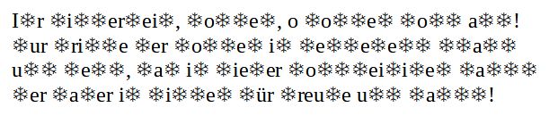

weiter
geht's mit ... Rätsel 2
Auf
diesem Bild hat der Schnee leider alle Buchstaben eines
Weihnachtsliedes bis auf die Vokale, die Umlaute und die "r"s
unkenntlich gemacht.

Wie lautet das letzte Wort in der dritten Zeile des Liedtextes?
Hast du die Lösung? Prima!
Tipp für die nächste Station: gesucht wird ein Weihnachtsbaum,
vor dem ein Teddy und ein Geschenk liegen
I
Lösung: Nacht